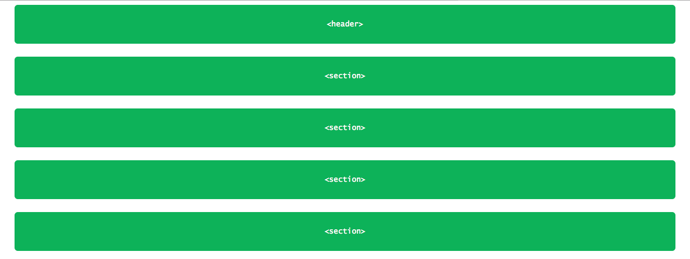
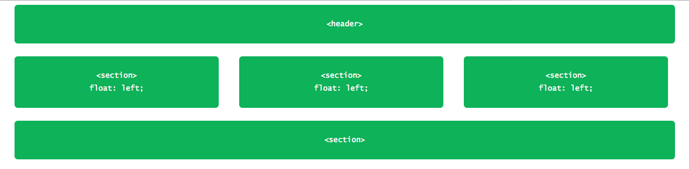

Positioning with floats
A very useful way to position element is with the float property, this feature, allow us to take an element, and remove it from the normal flow of the page, and position it next to its parent element (either in its left or right). All other elements on the page will then flow around the floated element. For example and <img> element floated to the side of a few paragraphs of text, will allow these paragraphs to wrap around the image as necessary.
When the float property is used on multiple elements at the same time, it provides the ability to create a layout by floating elements directly to or opposite each other, as seen in multiple-column layouts. What exaclty this means? examples of this?. The float property accepts a few values, being the most popular left and right
img {
float: left;
}
Floats in practice add link to another page with solved example
In a common page layout with a header, two columns in the center, and a footer at the bottom, the elements would look like this:
<header><section>See the page here.
 how to shrink images to fit the screen size? Ans/ set
how to shrink images to fit the screen size? Ans/ set width: 100%;
Here, as block-level elements the <section> and <aside> elements will be stacked in top of one another by default. However, in the cases when setting these elements side by side is necessary/desired, by floating these elements is possible position them as two columns sitting opposite one another. The CSS to do so look like this:
section {
float: left;
}
aside {
float: right;
}
See an example of how this page would look like here and here.
When an element is floated, it will float all the way to the edge of its parent element; when no parent element is present, then, it will float all the way to the edge of the page. Floating an element will remove it from the normal flow of the page, and as seen in the previous examples, this causes the width to default the width of the content within it. This situation isn't always desirable, for example, when creating columns for a reusable layout that can have different contents. Fortunately this can be corrected setting up a fixed or proportional (percentage) width, and additionally, to avoid elements from touching one another, causing the content of one to sit directly next to the content of the other, we can use the margin property to create space between elements.
In this example a margin and a width are added to the columns of layout of the previous example to better shape the desired outcome.
section {
float: left;
margin: 0 1.5%
width: 63%;
}
aside {
float: right;
margin: 0 1.5%;
width: 30%
}
Once this margin and width are applied the layout looks like this, notice that when inspecting the page, although the footer element still touches the section and aside elements, the last two don't touches one another any more. On the other hand, the values for the margin and width has been set up in such a way that add up to the 100%, filling out the entire width of its parente element (body in this case).

In order to prevent the <footer> from overlap the <section> elements, is necessary to include the following code in the CSS file:
footer {
clear: both;
margin-bottom: 0;
}
See the page with the above code implemented here.
Building a three column layout with floats
In the previous exercise two columns were displayed by floating one to the left and the other to the right. If more columns are desired, the approach to take will be slightly different; Say, for example, we'd like to have a row of three columns between our <header> and <footer> elements. If the <aside> element is dropped and three <section> elements are used, the HTML look like this:
<header>...</header>
<section>...</section>
<section>...</section>
<section>...</section>
<footer>...</footer>
The layout of the page is shown below and in this link:
In this case, instead of float one column to the left and the other to the right, all three <section> elements are floated to the left, in this case is necessary to adjust the width of the <section> elements to account for the additional columns and to get them to sit one next to the other.
section {
float: left;
margin: 0 1.5%;
width: 30%;
}
Once this CSS code for floating the elements is applied, the layout will look like this:
Clearing & containing floats
The float property was originally designed to wrap content around images, instead of positioning content as is also usually employed, this "misuse" rises some rendering issues, where elements that are next to a floated element or, are parent elements of a floated element won't be displayed properly, due to the fact that the floated element is taken out of the normal flow of the page.
Within these pitfalls, we might encounter that margin and padding properties aren't correctly interpreted, causing them to blend into the floated element; other properties can also be affected. Also, there are situations were unwanted content start to wrap around the floated element. The action of removing an element from the flow of the document, produce that all the elements around the floated element wrap and consume any available space around the floated element, which is often undesired.
In this previous example, once the <aside> and <section> elements where floated and also prior to assign any fixed/specific width value to them, as they were floating, the <footer> element wrapped around these two elements, sitting in the gutter left by them. To prevent this kind of situations, is necessary to "contain" or "clear" those floats for the document return to its normal flow.
Clearing floats
Clearing floats is done by the clear property, which accepts a few different values: the most common being: left, right, and both, e.g.:
div {
clear: left;
}
As their name suggests, the left value for the float property will clear left floats, while the right value will clear right floats. The most ideal and often used value is both.
In the example shown, adding a clear: both value to the footer, will clear the float. It is important that this clear property be applied to the element inmediately after the floated elements, not before, to return the page to its normal flow.
footer {
clear: both;
}
Containing floats
Another technique to return the document to its normal flow, is containing floats, this method requires the floated element to be contained into a parent element, that will act as the container. The CSS for this parent element, represented by the group class, is shown below. The results are almost identical to the ones achieved with clear; however, containing floats does help to guarantee that all of our styles will be rendered properly.
.group:before,
.group:after {
content: "";
display: table;
}
.group:after {
clear: both;
}
.group {
clear: both;
*zoom: 1;
}
The previous code involves a lot of things, but what is basically doing is clearing any floated elements within the element with the class of group and returning the flow of the document back to normal.
- More specifically the :before and :after pseudo-elements, are dynamically generated elements above and below the element that has the group class. Those elements do not include any content and are displayed as table-level elements, much like block-level elements.
- The dynamically generated element after the element with the class of group is clearing the floats within the element with the class of group, much like the clear from before (notice the use of clear: both in this instance).
- Lastly, the element with the class of group itself also clears any floats that may appear above it, in case a left or right float may exist. It also includes a little trickery to get older browsers to play nicely.
Look for more examples, and how exactly each part of this code works.
This is way more work than the clear: both; declaration, but it can produce more consistent and better results, proving to be quite useful.
Comming back to the two-column page layout from before, the <section> and <aside> elements could be wrapped into a parent element, that will contain the floats within itself. The code and page would look like this:
HTML
<header>...</header>
<div class="group">
<section>...</section>
<aside>...</aside>
</div>
<footer>...</footer>
CSS
/* selects any possible element outside the float's parent element. */
.group:before,
.group:after {
content: "";
display: table;
}
/* selects any possible element within the float's parent element. */
.group:after {
clear: both;
}
/* selects any possible left/right float element that might appear above it.*/
.group {
clear: both;
*zoom: 1; /* trickery to get backwards compatibility with browsers*/
}
section {
float: left;
margin: 0 1.5%;
width: 63%
}
aside {
float: right;
margin: 0 1.5%
width: 30%;
}
The page with this float container/code implementation will look like this.
insert screenshotThis technique is known as clearfix and is usually found in websites under this name or as cf. Is necessary to keep track of the floated elements specially in pages with multiple rows of multiple columns to keep the normal flow of the page.
Floating an element might change the value for its display property
As floating an element removes it from the normal flow of the page, this property will also handle any time of floated element as a
blockelement, hence, if aninlineelement is floated (i.e. ignoring any possibleheightorwidthvalue) it will now be treated as a block element, being possible to assign a width and height value.